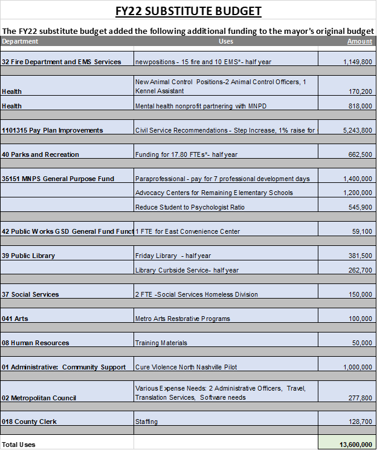
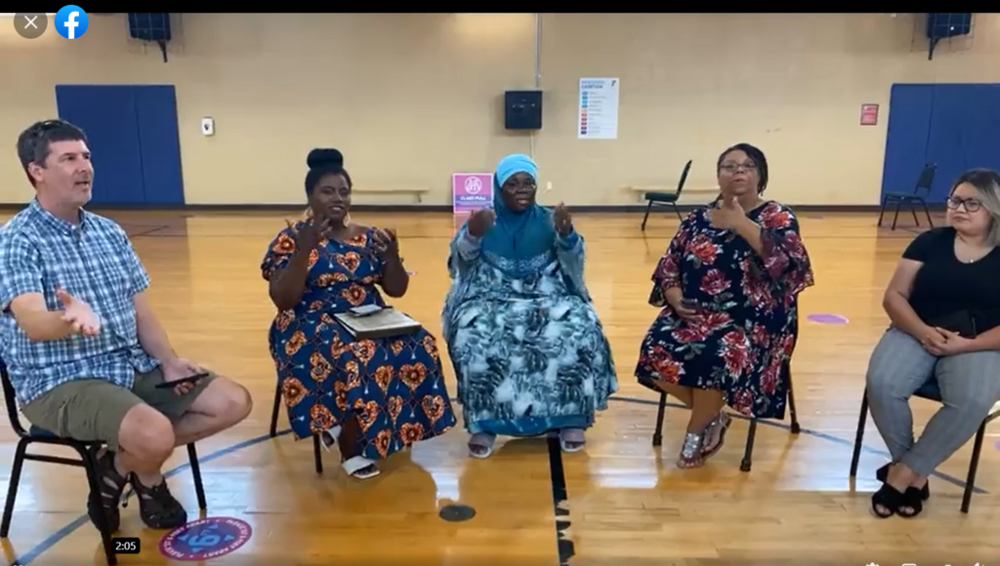
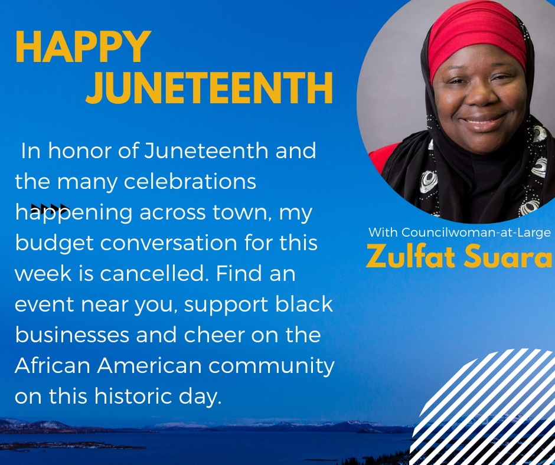

Chair’s Substitute Budget
Last week’s Budget Conversation focused on highlighting the changes put forth by Budget Chair Kyonzte Toombs in the substitute budget. This discussion was a special treat as I was not only joined by Budget Chair Kyonzte Toombs, but also CM Bob Mendes, CM Delishia Porterfield, and CM Sandra Sepulveda as well. As you all may know, the substitute budget passed unanimously at Tuesday’s council meeting–a testament to the incredible work by Budget Chair Toombs and vice-chair Porterfield. Though the council has already passed the budget, I still feel it is still necessary to highlight the differences between the mayor’s budget and the substitute, which technically became the official budget for FY 22. Here is the link to the budget as substituted.
In the beginning of our conversation, Budget Chair Toombs indicated that she did not make any changes to the Mayor’s proposed tax rate. Instead, the $13.6 million worth of changes originated from other parts of the budget, all without taking money from the fund balance or MNPD. Overall, the most significant alterations made by the substitute budget include money toward MNPS and Metro’s staffing and pay-plan. We also talked about the funding for MNPD and what actions are being taken to address the mental health concerns we discussed last week.
Below are the important takeaways from our discussion.
Filing in the gaps for MNPS
I am extremely happy with the substitute budget as it fulfilled many of the items on my Wishlist relating to our schools. These items were also on the minority caucus Wishlist as well as other councilmembers’ Wishlist. In short, the substitute allocated more funds to MNPS for the following::
- Seven paid professional development days for support staff (costing about $1.4 million). Currently MNPS support staff do not participate in and are not paid for seven (7) in-service/professional days. What I love about this addition is that it not only ensures that support staff do not miss 7 days worth of pay for something that is out of their control, but it also makes sure that everyone involved in our students’ education participates in the in-service development. As we focus on social emotional learning of our students, it is important that we provide necessary training for ALL staff.
- Advocacy Centers for the remaining 17 schools (about $1.2 million). The mayor’s budget funds advocacy centers for the first time. This is a huge step in addressing the social-emotional needs of our students. However, the original budget only funded 55 out of the 72 elementary schools. The substitute provides funding for the 17 remaining schools and ensures that EVERY elementary school has a much needed advocacy center.
- Reduction of the student-to-psychologist ratio (about $550,000)

There are also measures to increase the funding to our libraries by about $1.3 million. This increase will allow the libraries to extend hours of operation to Fridays and implement a more permanent curbside delivery system. Reliable access to libraries is a key factor in protecting the equity of our education system.
Employee compensation/under-staffing
The second goal of the substitute budget, according to Budget Chair Toombs, was to address staffing needs and the civil service recommendations that Mayor Cooper’s budget failed to accommodate.
First, the substitute budget makes room for staff increases in the following areas:
- Fire and EMS: The substitute budget funds an additional 15 firefighters and 10 EMS personnel on top of Mayor Cooper’s proposal of 25 new firefighters and 20 new EMS workers.
- Parks: The substitute budget funds 21 additional positions whereas the mayor’s budget only accounts for 9 new positions. With 16,000 acres of park land, 9 new workers is not enough.
- Convenience Centers: 1 additional position added to make sure that your waste is properly disposed of.
- Social Services: 2 positions to help provide services for unhoused individuals.
- County Clerk Office: An additional 2 staffing members to help with TADS processing and other administrative roles.
- Other: This includes some staff increases in public libraries and animal control.
Second, the substitute budget takes into consideration the recommendations made by the civil service commission relating to metro employees’ compensation. To highlight the difference:
- Mayor Cooper’s budget proposes a step increase for employees on the step-program (typically non-degreed, low-paid employees), a 3% merit-based raise for open-range employees, and a 2% COLA (cost of living adjustment) for all employees.
- The substitute budget adds an additional step increase to accommodate for the budget cuts last year and an additional 1% bump for open range employees.
It is important to note that there have been 5 missed steps in the past 15 years, so accommodation is well overdo, especially given how difficult the past year has been for all of us. We cannot continue to balance the budget on the backs of our own employees while also expecting them to work just as hard, if not harder, during tough times.
MNPD
Although the People’s Budget requested that money should be diverted from MNPD to other public services, Budget Chair Toombs was confident that leaving the money where it is will still accomplish many of our goals pertaining to mental health. Furthermore, we live in a strong mayor system, so council members historically do not have the power to implement changes that alter the Mayor’s budget by more than 1%. If the public is seeking large, institutional changes, pressure must be placed on the mayor first.
Regardless, below are some of the pillars of the new changes to public safety:
- $1 million toward the Cure Violence North Nashville pilot program. Cure Violence North Nashville is a violence interruption program that we expect to partner with Gideon’s Army in the near future. This program will provide us with key data to inform our next steps.
- $2 million worth of state grants that pay for a community safety office investigating alternatives to traditional policing.
- Around $800,000 going toward Mental Health Cooperative, the organization that will be partnering with MNPD in the co-response model. Mental Health Cooperative also houses a crisis treatment center that is underfunded.
Based on this budget, and the recommendations of Mental Health Cooperative, we are only able to fund the co-response model at this time. Although many council members, including myself, would prefer to implement a HEALS/Kahoots model as well, we do not have the resources to develop two separate pilots at this time. Furthermore, based on the limitations of our government, Mental Health Cooperative is our only state-sponsored provider, and they do not have the resources to train their professionals for two different pilots either. At the end of the day, we had to go with the suggestions of the provider. Therefore, we must start with a co-response model alone, but plan to grow to a system in which both co-response and HEALS teams are able to respond to calls. For the time being, we will focus on collecting data, through a neutral third-party, to inform our future decisions.
Other
Some other exciting provisions in the substitute budget include the incorporation of preliminary translation services into metro government as well as a participatory budget pilot in North Nashville and Bordeaux. The participatory budget pilot takes $2 million from the capital spending plan and allows the residents of the area to decide how to spend it. This process has never been used before in Nashville, and the details are still being nailed down, but it is an exciting pilot nonetheless. Additionally, I am excited that the substitute also funds my $25K request for a software that will help increase the efficiency and effectiveness of the communications/collaborations between council members without violating the open meetings act. This recommendation came from a task force that I have been working on for the past year.
Concluding Remarks
As budget chair for the minority caucus, I am very happy with the substitute budget as most of the items advocated for by the caucus made it to the final budget. This budget provided more funding for our children and for our employees. And we must continue to do so. In order to protect this progress, it is critical that we defeat the referendum. If passed, the referendum will negate all these investments in our children, our employees and our city. It will take away money from MNPS, Library, Parks, Mental Health, Fire, Housing, and much more.
If you missed last week’s Budget Conversation with Councilmembers Toombs, Porterfield, Sepulveda and Mendes, you can watch the entire episode at the link below.

Juneteenth/Budget Conversation
On Thursday, President Joe Biden signed the Juneteenth National Independence Day Act into law, making June 19th a federal holiday. Juneteenth (short for “June Nineteenth”) marks the day when federal troops arrived in Texas in 1865 to take control of the state and ensure that all enslaved people were freed. Despite the fact that the Emancipation Proclamation was signed in 1863, many slaves in the south were not free until the troops’ came a full two and a half years later. In honor of Juneteenth and the many celebrations happening across town, my budget conversation for this week is cancelled. Find an event near you, support black businesses and cheer on the African American community on this historic day. I will be back June 26th with former CM Fabian Bedne to discuss participatory budgeting

As always, if you have any questions or concerns about anything we have discussed, please do not hesitate to reach out to me.